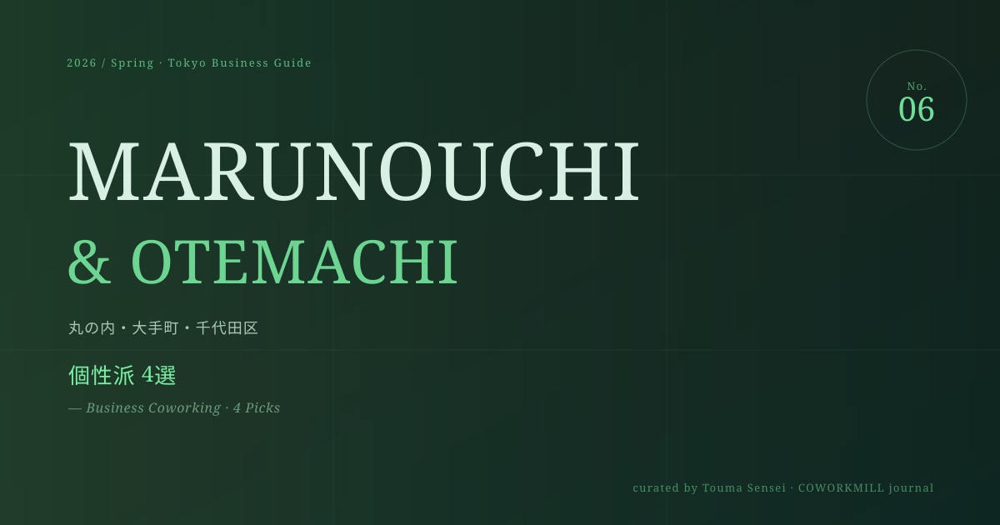

正直に申し上げると、丸の内・大手町というエリアを歩くと、最初に目に入るのはチェーンあります。、高層ビルのサービスオフィスばかりです。「この街に個性的な場所はなつです！～㑀���couples
丸の内・大手町 個性派コワーキング 4選｜2026年最新
ト
トウマ先生
銀座・千代田区担当


正直に申し上げると、丸の内・大手町というエリアを歩くと、最初に目に入るのはチェーンあります。、高層ビルのサービスオフィスばかりです。「この街に個性的な場所はなつです！～㑀���couples